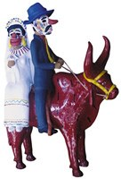
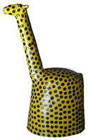
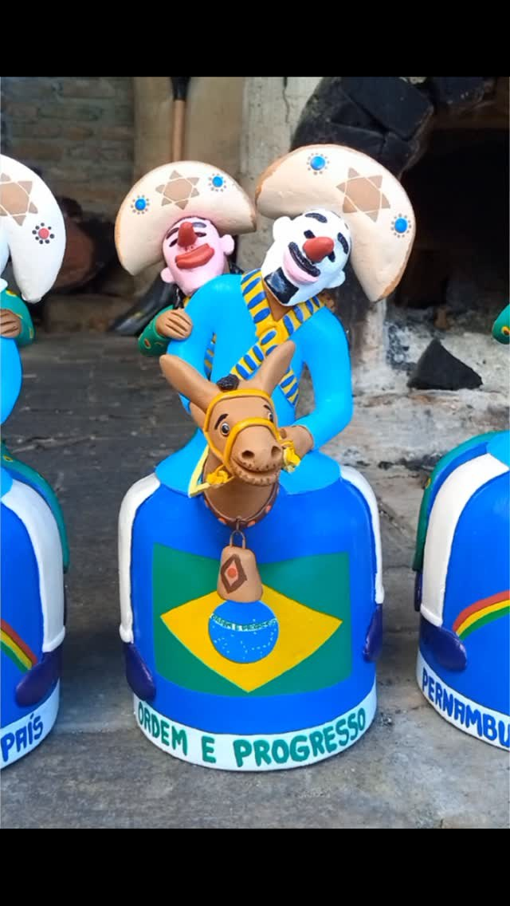
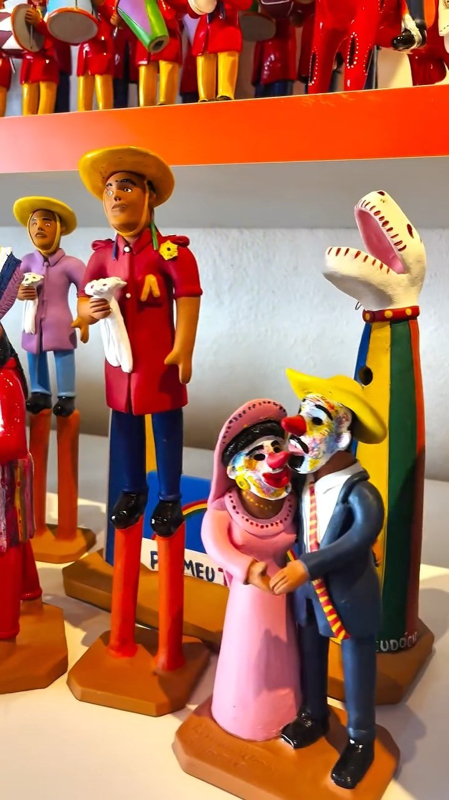
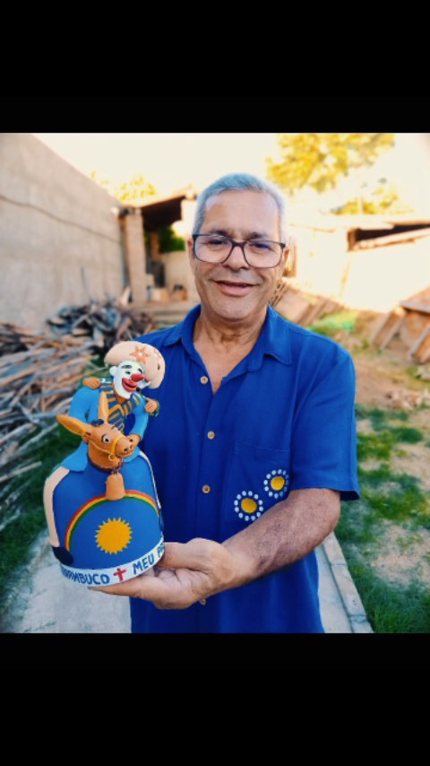
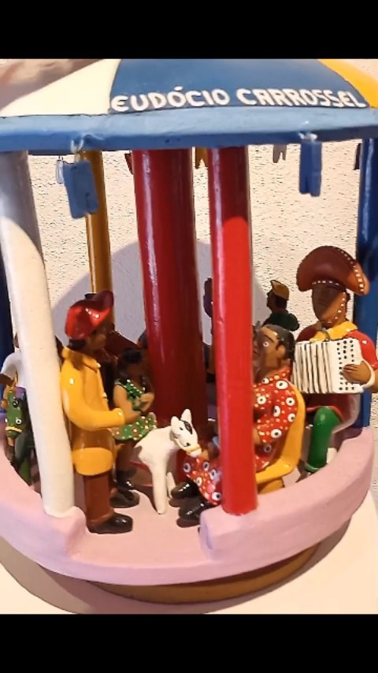

Manuel/Manoel Eudócio
O barro do Alto do Moura transformado em cena, memória e povo.
Ceramista pernambucano ligado à tradição do Alto do Moura e ao universo de Mestre Vitalino, Manuel Eudócio criou personagens populares, cenas de festa e figuras do imaginário nordestino em milhares de peças de barro.
Manuel Eudócio nasceu no Alto do Moura, em Caruaru, em 1931. Ainda criança, aprendeu a brincar e a trabalhar com o barro, modelando pequenos animais e brinquedos. O cotidiano do lugar — feira, música, festa, religiosidade e personagens do Nordeste — tornou-se a matéria viva de sua obra.
Em 1948, aproximou-se de Mestre Vitalino e aprimorou uma linguagem própria dentro da cerâmica figurativa. Suas peças eram feitas em argila úmida, queimadas em forno de lenha e depois decoradas, revelando cenas como Lampião e Maria Bonita, o Trio Nordestino, o Bumba-meu-boi e personagens do povo.
Ao longo de mais de oito décadas de vida, produziu um legado imenso, estimado em mais de 50 mil peças. Em 2002, foi reconhecido como Patrimônio Vivo de Pernambuco, reforçando sua importância para a memória cultural do estado.
Em suas mãos, o barro deixou de ser matéria: virou narrativa popular.
Para observar na peça
- Personagens do cotidiano nordestino
- Humor e movimento nas figuras
- Relação com a tradição de Mestre Vitalino
- Cores aplicadas após a queima
Materiais e técnica
Galeria de referências de estilo
Imagens públicas reunidas para reconhecer linguagem, materiais e técnica. As peças da exposição são vistas apenas ao vivo.






Fontes e créditos
- Enciclopédia Itaú Cultural — Manuel Eudócio https://enciclopedia.itaucultural.org.br/pessoas/48952-manuel-eudocio
- Wikipédia — Manoel Eudócio https://pt.wikipedia.org/wiki/Manoel_Eud%C3%B3cio
- Pesquisa Escolar do Nordeste — Manuel Eudócio https://www.youtube.com/watch?v=tN9Clpkfvps